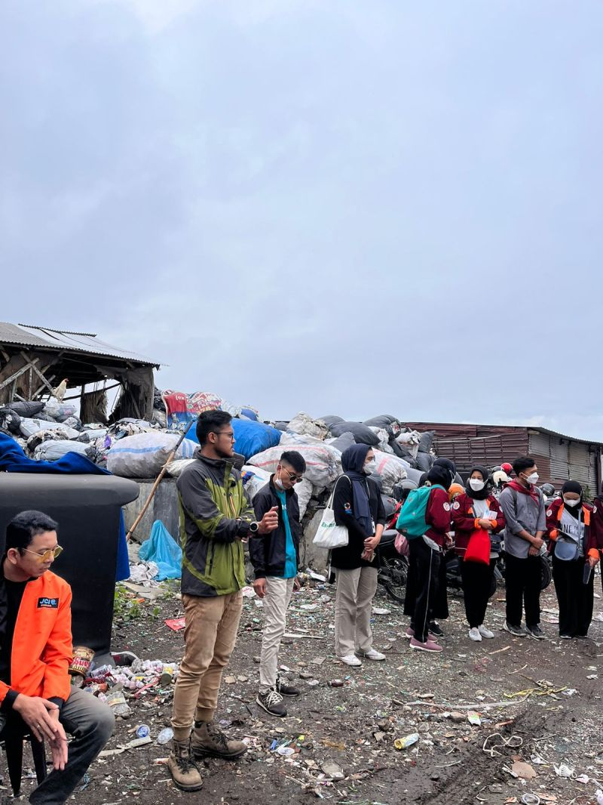
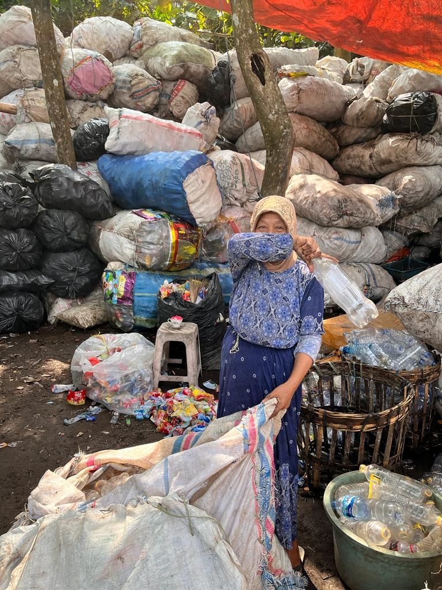

In Indonesia, a waste collector is called “Pemulung.” But for us at Buangdisini, we call them “Pemulih Bumi” — Earth Restorers. In the world of waste management, the life of a garbage collector in a developing country is very different compared to a sanitation worker in a more developed nation.

The Challenges They Face
Dealing with hazardous waste. In many developing cities, waste collectors handle dangerous materials like medical waste, dead animals, and sanitary waste, often mixed with regular trash. These unsung heroes do this risky work without proper safety gear or equipment, putting their health at serious risk.
Going beyond the job. Solid waste workers in developing countries are often assigned tasks beyond their usual responsibilities — cleaning up areas with open defecation or clearing garbage-clogged drains. Society often looks down on their jobs and does not give them the respect they deserve.
Neglected welfare. The well-being of waste collectors is often at the bottom of the priority list for governments. These workers tend to come from lower socio-economic backgrounds and are typically paid less than workers in other related fields.

Their work is vital for maintaining public health and cleanliness. It’s time we recognise their dedication and address the need for better working conditions, fair wages, and access to essential resources.
By highlighting the challenges faced by waste collectors in developing countries, we can work together to bring about meaningful change. Let’s advocate for their rights, strive for safer working conditions, and foster a culture that appreciates and respects their important contributions.
Together, we can improve the lives of these unsung heroes and create a society that values and supports their essential work.